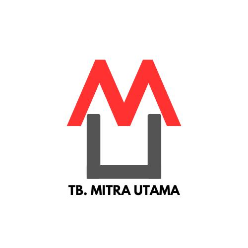

Master
Tambah Toko
User & Akses
Barang & Stok
Daftar & Form Barang
Import Excel
Stok Opname
Kartu Stok
Penjualan
Kasir & Pembayaran
Nota & Riwayat
Retur
Surat Jalan
Kas & Harian
Buka / Tutup Shift
Rekap Shift & Approval
Pengeluaran
Tutup Hari
Laporan dasar
R2Menyusul
Form Harga & historiPembelianPenerimaan kontainerFIFOTransfer gudangCek stok lintas tokoSalin barangMigrasi transaksi lamaAudit TrailLaporan lengkap
Offline dibatalkan: sistem online saja.
Catatan
- Stok R1 hanya berubah lewat opname, penjualan, retur, dan void.
- Kasir hanya melihat layar Kasir.
POS Toko
Kasir, stok, dan kas dalam satu tempat.

Masuk
Gunakan akun Anda.
Email
nama@perusahaan.com
Password
••••••••
Masuk
Setelah login:Super Admin → PusatAdmin / Gudang → Dashboard TokoKasir → Layar Kasir
Dashboard
Tambah TokoMitra Utama
AktifMU · 1 register
Penjualan hari iniRp 4.850.00037 nota · 1 shift berjalan
Masuk ke toko
Cabang Pasar Baru
AktifPSB · 1 register
Penjualan hari iniRp 2.130.00018 nota · belum ada shift
Masuk ke toko
Toko baru
Catatan
- Hanya Mitra Utama yang aktif di awal; toko lain hanya contoh.
- Laporan overall ditunda ke Fase 2.
Master Toko
Tambah Toko| Toko | Database | Nota | Status | |
|---|---|---|---|---|
| Mitra Utamamitra_utama | store_mitra_utama | MU | Aktif | Edit |
| Cabang Pasar Barupasar_baru | store_pasar_baru | PSB | Aktif | Edit |
| Cabang Timurcabang_timur | — | TMR | Gagal | Coba lagi |
Toko baru
Nama toko
Cabang Barat
Kode
cabang_barat
Nama database
u123_store_cabang_barat
Prefiks nota
CBB
User database
u123_cabang_barat
Password database
••••••••••
Admin awal
Pilih user
Modal kas tetap
Rp 500.000
Buat & siapkan database
Menyiapkan…
Uji koneksi database
Migrasi tabel
Gudang & pengaturan awal
Catatan
- Database dibuat dulu di hPanel; aplikasi hanya menguji, migrasi, dan seed.
- Kode toko tidak bisa diubah. Toko tidak dihapus, hanya dinonaktifkan.
User & Akses
Tambah User| Nama | Peran | Toko | Aktif |
|---|---|---|---|
| Budiadmin@example.test | Super Admin | Semua | |
| Andiadmin.mu@example.test | Admin | Mitra Utama | |
| Sarisari@example.test | Kasir | Mitra Utama | |
| Dedidedi@example.test | Gudang | Mitra Utama |
User baru
Nama
Joko
Email
joko@example.test
Peran
AdminGudangKasir
Toko
Mitra Utama
Simpan
Selamat siang, Andi
Opname baruBuka KasirPenjualan bersih hari iniRp 4.400.000Rp 4.850.000 − retur Rp 450.000
Stok di bawah minimum12 barangLihat daftar →
Perlu tindakan41 retur · 1 selisih kas · 2 surat jalan
Menunggu persetujuan
Retur · RET/MU/2610/0003diajukan SariReturTinjau
Shift #0424selisih −Rp 10.000Selisih kasTinjau
Shift berjalan
S
Sari · Kasir 1sejak 08:00 · shift pagiBukaDaftar Barang
Import ExcelTambah BarangCari nama, SKU, atau barcode
Semua kategori
Semua status
| Barang | Stok jual | Dead stock | Modal | Harga jual | Status | |
|---|---|---|---|---|---|---|
| Cat Tembok Putih 5kgMU0001 · Cat · Dulux | 7 DUS + 2 PAIL | 1 PAIL | 72.875 | PAIL 116.600 | Aktif | Edit |
| Paku 5cmMU0002 · Bangunan | 120,5 KG | — | 18.000 | KG 24.000 | Aktif | Edit |
| Lampu LED 9WMU0003 · Listrik | 3 PCSmin 12 | 1 PCS | 9.500 | PCS 15.000 | Aktif | Edit |
| Kuas 3"MU0004 · Cat | 38 PCS | — | 6.000 | PCS 9.000 | Nonaktif | Edit |
1–4 dari 1.759 barang‹ 1 2 3 … ›
Catatan
- Barang dibuat langsung di toko; tidak ada katalog pusat.
- Dead stock tidak muncul di kasir.
Cat Tembok Putih 5kg
BatalSimpanInfo barang
SKU
MU0001
Nama
Cat Tembok Putih 5kg
Kategori
Cat
Merek
Dulux
Stok minimum
8 PAIL
Aktif
Satuan & harga
Satuan dasar
PAIL
Harga beli (per satuan dasar)
Rp 72.875
| Satuan | Konversi | Barcode | Modal | Harga jual | Dijual | Default | |
|---|---|---|---|---|---|---|---|
| PAIL dasar | 1 | 8991234567890 | 72.875 | 116.600 | |||
| DUS | 4 | 18991234567897 | 291.500 | 437.250 | Hapus |
Tambah satuanHarga di bawah modal meminta konfirmasi
Catatan
- Modal tiap satuan = harga beli × konversi.
- Konversi terkunci setelah ada stok atau transaksi.
- Mode margin dan histori harga ada di R2.
Import Excel
Unduh templateUnggahPeriksaSimpan
Baris dibaca1.759
Siap disimpan1.742
Perlu diperbaiki17
| Baris | SKU | Nama | Satuan | Stok awal | Hasil |
|---|---|---|---|---|---|
| 2 | MU0001 | Cat Tembok Putih 5kg | PAIL | 30 | OK |
| 3 | MU0002 | Paku 5cm | KG | 120,5 | OK |
| 118 | MU0117 | Pipa PVC 3" | BTG | 40 | Konversi kosong |
| 240 | MU0239 | Selang 1/2" | — | 12 | Satuan wajib |
Unduh daftar errorUnggah ulangSimpan 1.742 baris
Catatan
- Kolom stok awal dicatat sebagai opname opening_balance.
- Baris error tidak ikut tersimpan.
OPN/MU/2610/0002
SimpanSelesai hitungPostingDraftMenghitungReviewDiposting
Gudang
Main Warehouse
Cakupan
Barang terpilih
Alasan
Penambahan stok
Cari atau scan barang2 dari 3 dihitung
| Barang | Stok sistem | Hitung fisik | Selisih | Alasan |
|---|---|---|---|---|
| Cat Tembok Putih 5kg | 24 PAIL | 5 DUS + 3 PAIL | −1 PAIL | tumpah |
| Kuas 3" | 38 PCS | 38 PCS | 0 | |
| Thinner 1L | 12 KALENG | isi hitungan… | — |
1 belum dihitungNilai selisih −Rp 72.875
Catatan
- Penjualan tetap jalan saat menghitung; selisih dihitung dari snapshot + mutasi.
- Hanya Admin yang bisa posting. Hitungan boleh campur satuan.
- Stok awal dan barang datang dimasukkan lewat sini.
Kartu Stok
ExcelCat Tembok Putih 5kg · MU0001
Main Warehouse
1–25 Okt 2026
| Waktu | Dokumen | Jenis | Masuk | Keluar | Saldo |
|---|---|---|---|---|---|
| 25 Okt 10:44 | INV/MU/K1/2610/0125 | Penjualan | 8 | 24 | |
| 25 Okt 09:30 | RET/MU/2610/0002 | Retur | 4 | 32 | |
| 24 Okt 16:05 | OPN/MU/2610/0001 | Opname | 20 | 28 | |
| 24 Okt 11:12 | INV/MU/K1/2610/0101 | Penjualan | 4 | 8 |
Satuan dasar: PAIL
Buka Shift
Kasir 1 · Sari
Modal kas awal
Rp 500.000
Laci sudah berisi modal di atas
Shift sebelumnya: selisih −Rp 10.000 menunggu approval.
Buka Shift & Mulai
Catatan
- Modal tetap hanya diubah Admin.
- Tanpa shift terbuka, kasir tidak bisa menjual.
S
Sari
RiwayatReturSurat JalanPengeluaranTutup ShiftMitra Utama · Kasir 1 · Shift #0425
Scan barcode atau ketik nama / SKUF2
Cat Tembok Putih 5kgStok 7 DUS + 2 PAIL
PAIL 116.600DUS 437.250
Paku 5cmStok 120,5 KG
KG 24.000DUS 560.000
Lampu LED 9WStok 3 PCS
PCS 15.000DUS 330.000
Kuas 3"Stok 38 PCS
PCS 9.000LUSIN 100.000
Keranjang3 itemINV/MU/K1/2610/0125
Cat Tembok Putih 5kg437.250 / DUS
DUS−2+874.500Kuas 3"9.000 / PCS
PCS−3+27.000Paku 5cm24.000 / KG
KG−1,5+36.000Nama pelanggan (opsional)
TotalRp 937.500
BatalTahanBayar F9
Catatan
- Enter pada barcode memasukkan satuan default; barcode satuan langsung memilih satuannya.
- Stok kurang → diblokir. Hanya satuan "dijual" yang tampil.
- Batal sebelum bayar langsung, dicatat. Tanpa kredit atau hutang.
Pembayaran
INV/MU/K1/2610/0125Rp 937.500
TunaiTransferQRISEDC
Diterima
Rp 500.000
Uang pas50.000100.000500.000
Tunai500.000
QRIS437.500
SisaLunas
Buat surat jalan (barang diantar)
Selesai & Cetak Nota
Catatan
- Satu transaksi atomik: nota, item, pembayaran, dan stok.
- Hanya tunai yang masuk hitungan kas shift.
58 mm80 mm
CetakSurat JalanMITRA UTAMA
Jl. Merdeka 12, Kota
Telp 021-555-0123
Jl. Merdeka 12, Kota
Telp 021-555-0123
NoINV/MU/K1/2610/0125
Tgl25-10-2026 10:44
KasirSari (K1)
Cat Tembok Putih 5kg
2 DUS x 437.250874.500
Kuas 3" 3 PCS x 9.00027.000
Paku 5cm 1,5 KG x 24.00036.000
TOTAL937.500
Tunai500.000
QRIS437.500
Terima kasih
Catatan
- Cetak ulang bertanda SALINAN; nota void bertanda VOID.
- Header, footer, dan kertas diatur di Pengaturan.
Riwayat Nota
Nomor nota
Hari ini
Semua status
| Nota | Metode | Total | Status | |
|---|---|---|---|---|
| …/012510:44 · Sari | Tunai + QRIS | 937.500 | Selesai | Void |
| …/012310:31 · Sari | QRIS | 54.000 | Selesai retur sebagian | Retur |
| …/012210:12 · Joko | Transfer | 2.150.000 | VOID |
Void nota …/0125
Alasan
Salah input satuan
Stok kembali 2 DUS Cat, 3 PCS Kuas, 1,5 KG Paku.
Void nota
Batal sebelum bayar
3 item · Rp 180.00010:02 · Pelanggan batal
1 item · Rp 45.00009:15 · Salah scan
Catatan
- Void hanya oleh Admin dan tercatat; nota tidak dihapus.
- Nota hari yang sudah ditutup memakai Retur.
Retur nota …/0118
24 Okt 2026| Barang | Terjual | Retur | Kondisi | Nilai |
|---|---|---|---|---|
| Cat Tembok Putih 5kgDUS · 437.250 | 2 | −1+ | Tetap dijual | 437.250 |
| Lampu LED 9WPCS · 15.000 | 3 | −1+ | Dead stock | 15.000 |
| Paku 5cmKG · 24.000 | 2 | −0+ | — | 0 |
Alasan
Salah warna; lampu pecah
RefundTukar barang
Nilai retur452.250
MetodeTunai
RefundRp 452.250
Ajukan Retur
Menunggu persetujuan Admin. Stok & kas berubah setelah disetujui.
Catatan
- Tukar barang: nilai retur otomatis memotong penjualan baru di kasir.
- Tanpa batas hari. Refund memakai harga di nota asli.
Surat Jalan
Baru dari nota| Surat jalan | Penerima | Status | |
|---|---|---|---|
| SJ/MU/2610/0007Nota …/0125 | CV Maju | Draft | Buka |
| SJ/MU/2610/0006Nota …/0118 | Pak Haji Rahmat | Dikirim | Update |
| SJ/MU/2610/0005Nota …/0110 | Proyek Villa Asri | Sebagian | Retur |
| SJ/MU/2610/0004Nota …/0099 | CV Maju | Diterima | Cetak |
SJ/MU/2610/0007
Penerima
Pak Wahyu (CV Maju)
Alamat
Jl. Raya Industri 21
Sopir
Dedi
Kendaraan
B 9123 XY
Cat Tembok Putih 5kgnota 2 DUS2
Kuas 3"nota 3 PCS3
Paku 5cmdibawa pembeli0
Simpan draftCetak
Catatan
- Dibuat dari nota; satu nota boleh beberapa surat jalan.
- Cetak tanpa harga, dengan kolom tanda tangan.
- Barang pulang hanya penanda; stok kembali lewat Retur.
Pengeluaran
PengeluaranDari laci120.000
Sumber lain1.250.000
Total 24 Okt1.370.000
| Keterangan | Kategori | Sumber | Nominal |
|---|---|---|---|
| Beli galon25 Okt · Toko Air | Operasional | Laci | 50.000 |
| Upah bongkar24 Okt · Pak Eko | Upah | Laci | 70.000 |
| Listrik Oktober24 Okt · PLN | Listrik/Air | Lainnya | 1.250.000 |
Pengeluaran baru
Kategori
Operasional
Nominal
Rp 50.000
Keterangan
Beli galon air minum
Sumber
Laci kasirLainnya
Simpan
Catatan
- Sumber laci mengurangi tunai seharusnya shift yang berjalan.
- Hari yang sudah ditutup terkunci.
Tutup Shift #0425
Kasir 1 · Sari
Penjualan tunai3.250.000
Transfer · QRIS · EDC1.600.000
Refund tunai−150.000
Pengeluaran laci−50.000
Modal awal500.000
Tunai seharusnya3.550.000
Tunai hasil hitung
3.540.000
Selisih
−10.000
Catatan selisih
Kembalian kurang Rp 10.000
Modal 500.000 tinggal di laci · setoran Rp 3.040.000
Tutup Shift & Cetak Laporan Z
Catatan
- Selisih ≠ 0 wajib catatan dan menunggu approval Admin; tidak memblokir shift berikutnya.
Rekap Shift
22–25 Okt 2026
| Shift | Kasir | Setoran | Selisih | Status |
|---|---|---|---|---|
| #042525 Okt · berjalan | Sari | — | — | Buka |
| #042424 Okt · siang | Joko | 2.270.000 | −10.000 | Menunggu |
| #042324 Okt · pagi | Sari | 1.650.000 | 0 | Selesai |
| #042223 Okt · siang | Joko | 2.495.000 | +15.000 | Disetujui |
Tinjau shift #0424
Tunai seharusnya2.780.000
Dihitung2.770.000
Selisih−10.000
Catatan kasir: kembalian kurang Rp 10.000
Catatan approval
Dicatat sebagai selisih kembalian
TolakSetujui
Sabtu, 24 Okt 2026
Ganti tanggal
Sebelum menutup
Semua shift sudah ditutup#0423 · #0424
Selisih kas belum diputuskan#0424 · −10.000Tinjau
Tidak ada retur menunggu
2 surat jalan belum selesaihanya peringatan
Catatan penutupan
Selisih −10.000 disetujui
Tutup Hari & Kunci Transaksi
Ringkasan
Nota61
Tunai4.300.000
Transfer1.650.000
QRIS720.000
Retur & refund−250.000
Pengeluaran laci−120.000
Total penjualan6.670.000
Riwayat
23 Okt ✓22 Okt ✓21 Okt dibuka ulang
Catatan
- Angka disimpan sebagai snapshot laporan harian.
- Terkunci: nota, retur, pengeluaran, dan shift tanggal itu. Opname tidak terkunci.
- Buka ulang hanya Super Admin dengan alasan.
Laporan
ExcelPenjualanStokSelisih opnameReturPengeluaran
Penjualan 19–25 OktRp 31.250.000
Nota402
Laba kotor (estimasi)Rp 6.480.000
Penjualan harian
Catatan
- Laba memakai modal = harga beli terakhir (estimasi) di R1.
Pengaturan
SimpanNota
Nama di nota
MITRA UTAMA
Alamat
Jl. Merdeka 12, Kota
Telepon
021-555-0123
Kertas
5880 mm
Footer
Terima kasih
Register
Kasir 1 · K1modal kas tetap500.000
Kategori pengeluaran
OperasionalListrik/AirTransportUpahATK+ Tambah